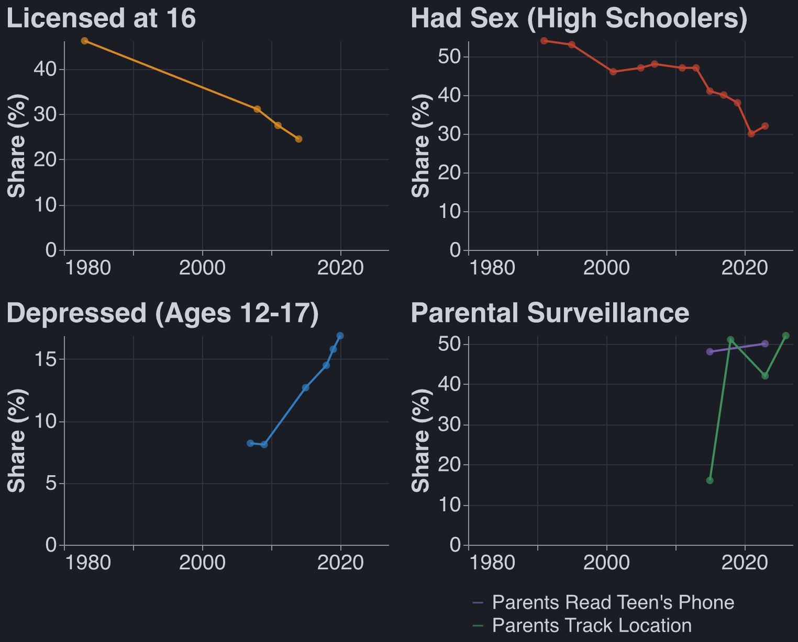

Powerful Lie Detection Would Be Good
Published Last edited
TLDR #
I weakly believe that powerful lie detection technology would be good for society. Technological capability is not a bottleneck on governments exerting power.
Enforcement Is Not Blocked on Capabilities #
The US government could be scraping (public, warrant-not-required) Instagram for photos of people smoking weed, tracking down said people, and arresting them. This does not happen. Notably, this does happen in the case of child pornography.[1] Most Western governments do not use all means at their disposal to enforce their own laws, which massively weakens arguments against technology on the basis of enabling ‘oppressive governments.’[2]
To take the thought experiment further: if you could ban any law enforcement agency from using digital evidence to catch or prosecute criminals, would you do it? Why is ‘the exact technological capacity USG has right now’ the optimal amount? More technological capability and better institutions (eg warrants) would be a Pareto improvement. More tech alone is better unless you have very strong opinions on states wielding too much power in the present day, which is a seductive but nonobvious position. Are you not happy that we catch child pornographers and murderers? Wouldn’t it be nice if we could do the same to corrupt politicians and insider traders?
Counterargument: surveillance has real cost which we might not know about. Courts dismiss grossly miscollected evidence, but this tends not to matter; the NSA can and will use parallel construction, i.e. “we read his email without a warrant, John Doe will be selling dope on First Street at 6pm, pull him over for his tinted windows.”
It’s messy and mixed, but I am OK with increasing the capabilities of the US justice system. Notably not analyzed: foreign governments.
Idealized Lie Detector #
Imagine a device which lets me “biologically sign” any statement. The signature only works if I genuinely believe the statement to be true and not misleading. This device cannot be wielded against me without my consent; I must actively sign a statement by, say, speaking the words intentionally. (I am not assuming that one could not be pressured into using the device, only that one could not have arbitrary beliefs read from one’s mind nonconsensually).
I doubt that the tech tree is shaped in such a way that we can have consensual lie detectors but not nonconsensual ones. But I’m not sure, someone should look into it!
The Glorious Transhumanist Future #
Once a year I biosign a document online stating “I am not a terrorist, I love America and planes.” I get to the airport 20 minutes before takeoff and walk straight from the curb to the gate, no TSA in sight.
Every politician biosigns the campaign platform on their website. Mysteriously, medicine falls to 10% of GDP, the Jones Act is repealed, and California finishes a train line.
Few politicians are able to biosign that they have never used illicit substances. Marijuana is legalized federally.
Slowly but surely, the worst corporate misdeeds are eliminated by biosignature norms. Oil company execs pledge to make reasonable efforts to eliminate bribery. Food and pharma company scientists biosign that their papers are neither misleading nor cherrypicked. AI lab CEOs promise to pause under certain conditions. None of these are 100% effective. All help.
Appendix: Mommy States #
After the state, I most fear giving lie detectors to parents.[3]
Children having fun experiences in the real world is trending down across categories. It’s unclear whether the driver of this is technological surveillance. Half of parents have (ever) looked through their kid’s phone. I am nervous that cheap lie detectors would further empower oppressive household mommy-states.

Sources: licences Sivak & Schoettle 2016; sex CDC 2012, CDC 2024; depression SAMHSA 2020; reading phones Pew 2016, Pew 2024; location tracking Pew 2016, Burnell 2023, Pew 2024, Mott 2026. The location line mixes populations: parents of 13–17s (2015), one US state (2018), parents of 18–25s (2023, 2026).
Appendix: Prior Work #
AI Futures Project tentatively in favor of lie detectors: AI 2040: Plan A (July 2026)
LessWrong on the startup Conduit, I am surprised this post got so many upvotes and agree with williawa’s comment. Don’t Build Mindreading (KellerScholl, August 2026)
David Friedman: If Lie Detectors Worked (July 2026)
Another LessWrong post which is mid: Lie detection is best when it’s cheap to cooperate (sciarrino, October 2026)
Appendix: To Think About Further #
This post comes from a fairly normie place, worrying about state power and not the looming AI-pocalypse. I want to think further about
- What I would ask AI company CEOs to biosign.
- How mind reading might help alignment.
- How bad it is to give mindreading to oppressive governments.
Notes #
Practically speaking, cloud hosting platforms do most of the work to keep child porn off of their services, but the intelligence apparatus comes after bad actors when this does not suffice. See eg PlayPen. ↩︎
It is worth mentioning that the Trump administration did use social media to gather evidence for deportations and it largely did not hold up in court, though cases are still being appealed. ↩︎
Maybe I should be more worried about companies? ↩︎
Sources #
Claude found these sources. Robbie did not necessarily review them.
- Pew Research Center (2024), “How Teens and Parents Approach Screen Time”: half of parents of 13-to-17-year-olds say they have looked through their teen’s phone (surveyed September–October 2023). In Pew’s 2014–15 survey, 48% had looked through their teen’s call records or text messages. https://www.pewresearch.org/internet/2024/03/11/how-teens-and-parents-approach-screen-time/ ↩︎
- Sivak & Schoettle (2016), University of Michigan Transportation Research Institute report UMTRI-2016-4: share of each age group holding a driver’s licence, from Federal Highway Administration data. https://public.websites.umich.edu/~umtriswt/PDF/UMTRI-2016-4.pdf ↩︎
- CDC (2012), “Trends in HIV-Related Risk Behaviors Among High School Students — United States, 1991–2011,” MMWR: share of high schoolers who have ever had sexual intercourse, 1991–2011. https://www.cdc.gov/mmwr/preview/mmwrhtml/mm6129a4.htm ↩︎
- CDC (2024), “Youth Risk Behavior Survey Data Summary & Trends Report: 2013–2023”: the same measure, 2013–2023. https://www.cdc.gov/yrbs/dstr/pdf/YRBS-2023-Data-Summary-Trend-Report.pdf ↩︎
- SAMHSA (2020), “Key Substance Use and Mental Health Indicators in the United States: Results from the 2019 National Survey on Drug Use and Health,” Figure 48: share of 12-to-17-year-olds with a major depressive episode in the past year, 2004–2019. The survey’s method changed in 2021, so later years aren’t comparable and aren’t plotted. https://www.samhsa.gov/data/sites/default/files/reports/rpt29393/2019NSDUHFFRPDFWHTML/2019NSDUHFFR1PDFW090120.pdf ↩︎
- Pew Research Center (2016), “Parents, Teens and Digital Monitoring” (surveyed 2014–15): 48% of parents of 13-to-17-year-olds had looked through their teen’s call records or messages, and 16% tracked their teen’s location. https://www.pewresearch.org/internet/2016/01/07/parents-teens-and-digital-monitoring/ ↩︎
- Burnell, Andrade, Kwiatek & Hoyle (2023), Journal of Family Psychology: 51% of parents of 12-to-18-year-olds in one US state tracked their child’s location in 2018. https://pmc.ncbi.nlm.nih.gov/articles/PMC10238636/ ↩︎
- Pew Research Center (2024), “Parents, Young Adult Children and the Transition to Adulthood” (surveyed late 2023): 42% of parents of 18-to-24-year-olds track their child’s location. https://www.pewresearch.org/social-trends/2024/01/25/parents-young-adult-children-and-the-transition-to-adulthood/ ↩︎
- C.S. Mott Children’s Hospital National Poll on Children’s Health (2026), “Safety or surveillance: Tracking of young adults”: 52% of parents of 18-to-25-year-olds track their child’s location. https://mottpoll.org/reports/safety-or-surveillance-tracking-young-adults ↩︎